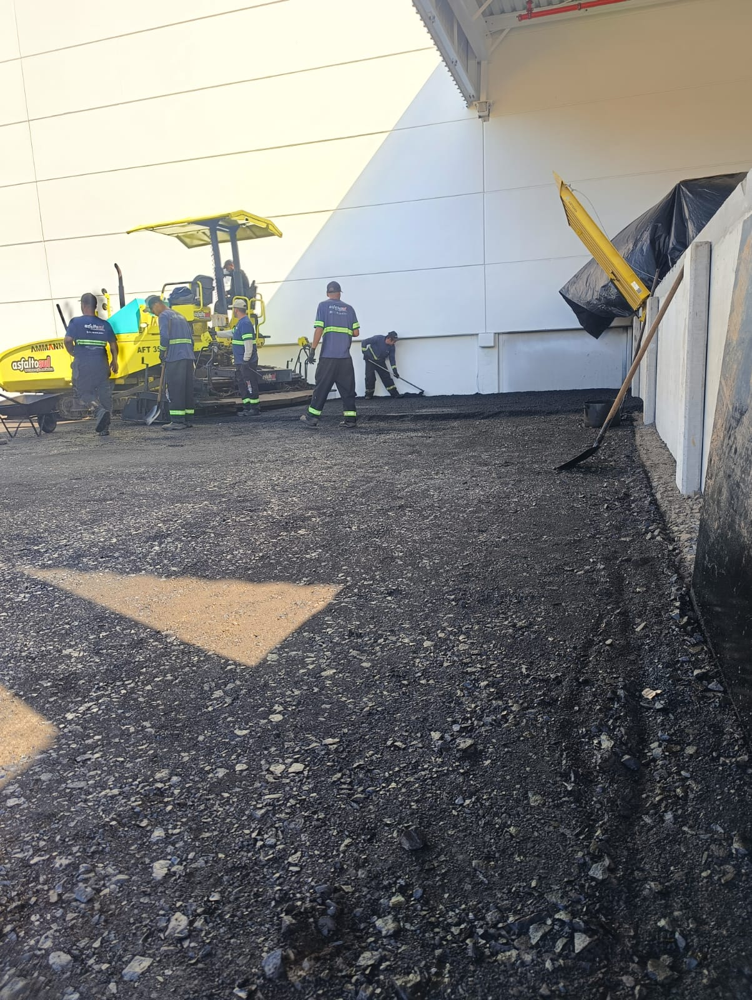
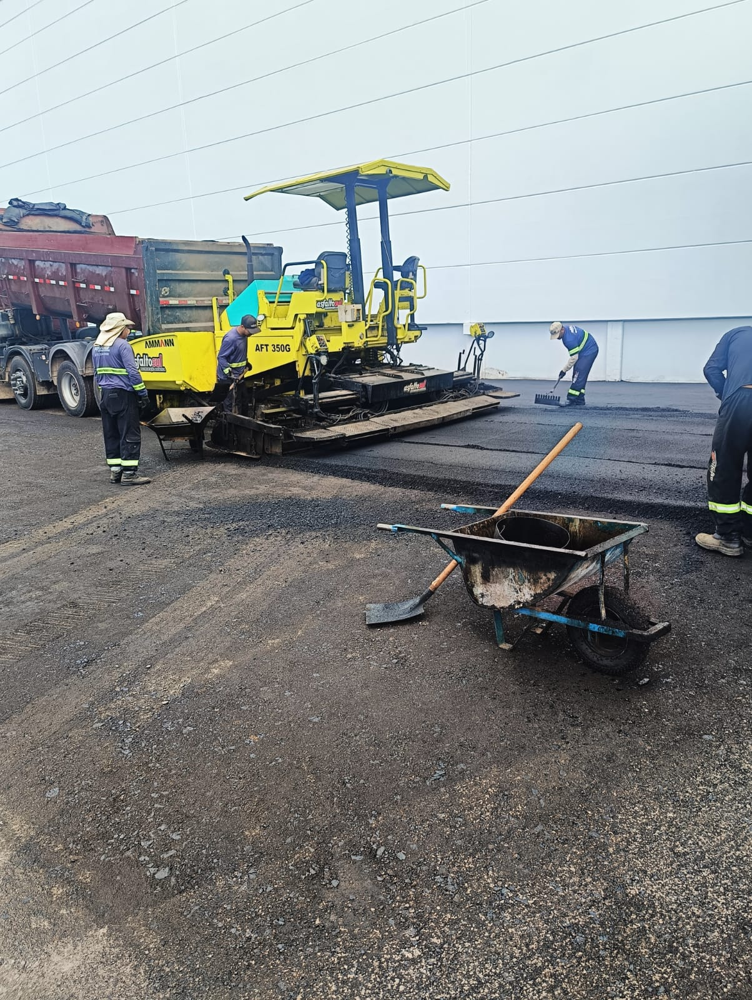
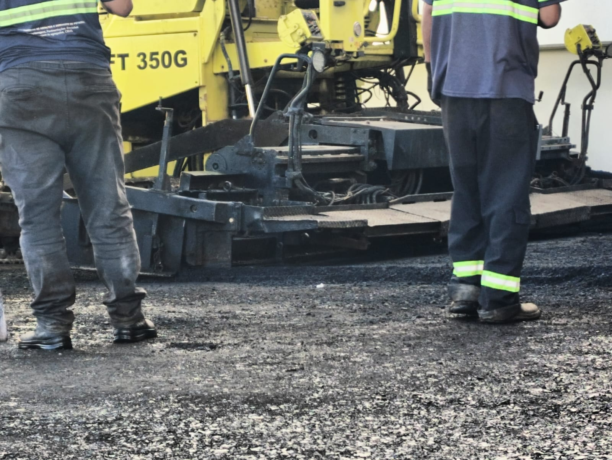

O que entregamos
Serviços completos
do solo ao asfalto.
Cada obra tem uma combinação diferente de serviços. Monte com a gente o pacote ideal para o seu projeto e orçamento.
Quem atendemos
De uma residência a um aeroporto
Prestamos serviços para prefeituras, construtoras, empresas, residências, condomínios, revendas, estacionamentos, pátios, calçadas e ciclovias.
Prefeituras
Vias municipais, tapa-buracos e recapeamento urbano.
Indústrias e Pátios
Pátios industriais, logísticos e estacionamentos de grande porte.
Construtoras
Vias de loteamentos, calçadas e obras de infraestrutura.
Condomínios
Vias internas, estacionamentos e reparos emergenciais.
Serviço 01
Pavimentação Asfáltica CBUQ
Usinagem e aplicação de Concreto Betuminoso Usinado a Quente — o padrão mais durável de pavimentação para vias, pátios industriais e estacionamentos.
- ●Dimensionamento por tipo de tráfego
- ●Usinagem e transporte da massa asfáltica
- ●Aplicação com vibroacabadora própria
- ●Compactação com rolo em camadas
- ●Venda de Asfalto Frio ensacado para reparos rápidos
- ●Também em Asfalto Frio Ensacado e PAVERS


Serviço 02
Terraplanagem e preparo de base
A fundação de toda via durável. Fazemos corte, aterro, nivelamento e compactação para criar base firme para qualquer revestimento.
- ●Corte e aterro com controle topográfico
- ●Compactação mecânica de subleito
- ●Execução de sub-base e base granular
- ●Regularização de áreas e terrenos
- ●Remoção de entulhos e limpeza de obras
Serviço 03
Recapeamento asfáltico
Fresagem do pavimento degradado e aplicação de nova camada. Mais econômico do que a reconstrução total da via.
- ●Avaliação e mapeamento de patologias
- ●Fresagem da camada degradada
- ●Reforço estrutural pontual quando necessário
- ●Nova camada de CBUQ e sinalização renovada

Mais serviços
Tudo o que sua via precisa
Drenagem Pluvial
Sarjetas, bocas-de-lobo, tubulações e caixas coletoras — para a água não destruir seu asfalto.
Sinalização Viária
Pintura de faixas, zebrados, setas e placas conforme CTB, CONTRAN e DNIT.
Abertura de Valas
Abertura e fechamento de valas no padrão CORSAN, DMAE e CEEE com equipe especializada.
Manutenção & Tapa-Buracos
Reparo localizado, selagem de trincas e contratos recorrentes de manutenção preventiva.